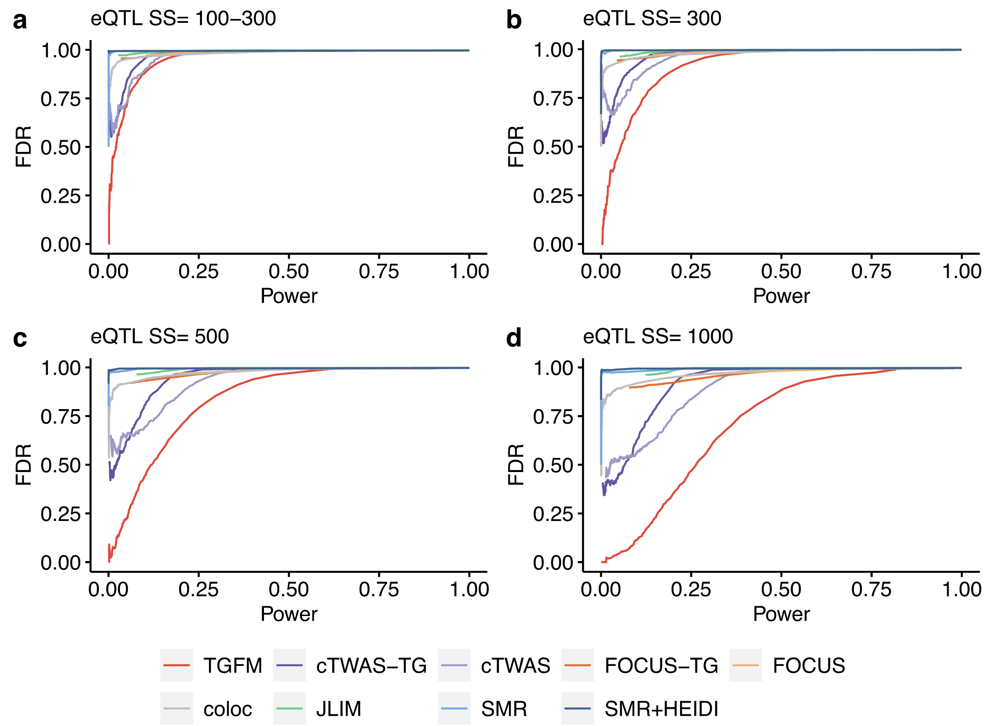
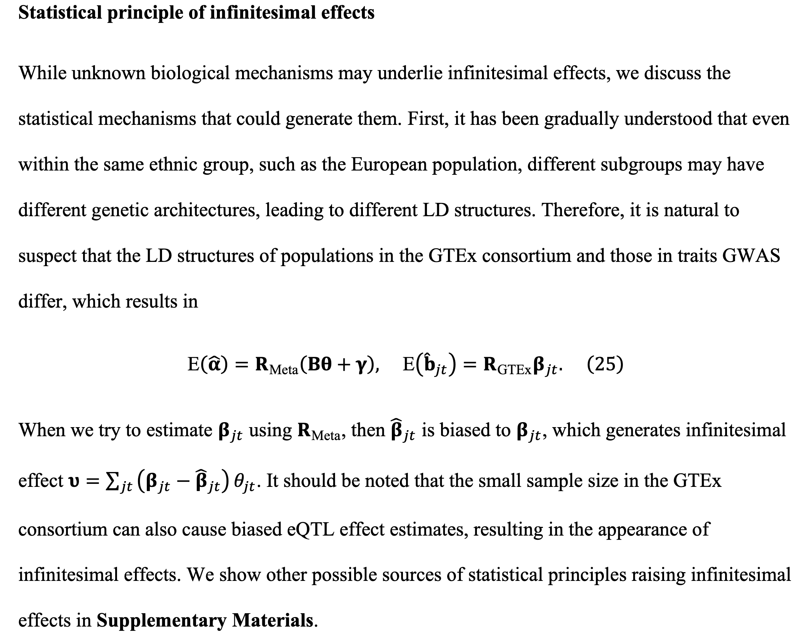
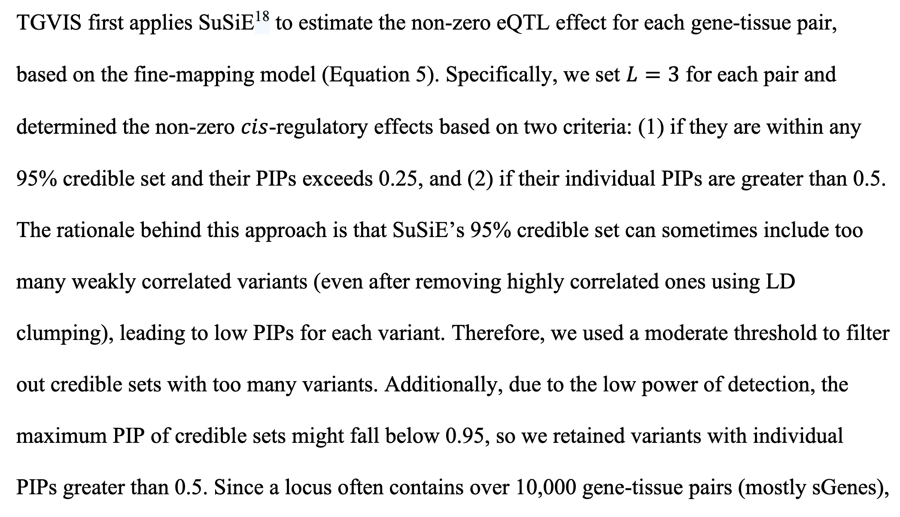

Fine-mapping casual Tissue-Gene pairs
TGFM
TGFM (Tissue–Gene Fine-Mapping), a method that infers the PIP for each gene–tissue pair to mediate a disease association at a given locus.
where denotes phenotypes, is the matrix of genotypes, indexes genes, indexes tissues.
TGFM consists of four steps:
In step 1, we apply SuSiE to perform eQTL fine-mapping of each gene–tissue pair in the external gene expression dataset (estimating a posterior distribution of the causal cis-eQTL effect sizes).
In step 2, we randomly sample 100 cis-predicted expression models for each gene–tissue pair from the posterior distributions of causal cis-eQTL effect sizes estimated in step 1.
In step 3, we apply SuSiE to perform disease fine-mapping in the target dataset (estimating the PIP of each genetic element) 100 times, iterating over the sampled cis-predicted expression models for each gene–tissue pair from step 2.
In step 4, we average the results of step 3 across the 100 disease fine-mapping runs.
TGFM increases fine-mapping power by specifying tissue-specific prior probabilities for each genetic element in a locus that are informed by genome-wide data, analogous to functionally informed variant-level fine-mapping
TGFM assigns one prior causal probability, , for each gene–tissue pair from tissue t and one prior causal probability, , for each non-mediated genetic variant.
TGFM account for uncertainty in estimates of and by using genomic bootstrapping, randomly sampling 100 sets of values of and (one for each of the 100 disease fine-mapping runs in step 3) and averaging TGFM results across the random samples.
Calibration and power of tissue–gene fine-mapping methods in simulations:

Comparison of tissue-gene fine-mapping power at same level of FDR in simulations:

TGFM extends cTWAS to allow multiple tissues to be analyzed simultaneously and can identify the trait-relevant tissues beyond the causal variants and genes. However, Cui et al. recently reported that current Bayesian fine-mapping methods, including SuSiE and FINEMAP, have a high replication failure rate (RFR) in practice. Cui et al. discovered that the widespread infinitesimal effects, which may stem from the polygenicity of complex traits, are the sources of the high RFR, and accounting for the infinitesimal effects can reduce the RFR and improve statistical power.
TGVIS
TGVIS (Tissue-Gene pairs, direct causal Variants, and Infinitesimal effects Selector), a multivariable TWAS method to identify tissue-specific causal genes and direct causal variants while accounting for infinitesimal effects:
Infinitesimal effect: The infinitesimal model, also known as the polygenic model, is a widely used statistical model in quantitative genetics and in genome-wide association studies. It is based on the idea that variation in a quantitative trait is influenced by an infinitely large number of genes, each of which makes an infinitely small (infinitesimal) contribution to the phenotype, as well as by environmental factors
Complex traits, however, have been shown to be largely explained by additive effects, with dominance being of negligible importance, though dominance and epistasis are still relevant for rare Mendelian disorders.

To resolve this curse of dimensionality, they utilized the three sparsity conditions that are commonly assumed in current fine-mapping methods:
-
Sparsity Condition 1: one or small number of variants causally contribute to tissue or cell-type specific gene expression.
-
Sparsity Condition 2: one or small number of gene-tissue pairs causally contribute to the trait.
-
Sparsity Condition 3: one or small number of direct causal variants exist with relatively large effect sizes.
In addition, they incorporated that variants can have infinitesimal effects: is normally distributed with a mean 0 and a small, unknown variance.
To estimate the non-zero eQTL effect, TGVIS applies SuSiE and fixed :

TGVIS estimates and by profile likelihood approach, and estimates the variance by REML.